요청 한 번에서 에이전트까지
Rig는 언어 모델 제공자의 API를 러스트에서 쓰게 해 주는 크레이트예요. OpenAI 같은 호스팅 모델뿐 아니라 Ollama도 지원해서, 내 컴퓨터에서 도는 로컬 모델을 쓸 때도 그대로 쓸 수 있어요.
요청 한 번 보내기
첫 예제는 가장 단순한 추론 요청이에요. 코드는 네 줄 흐름이에요. 맨 위에서 환경 변수로 OpenAI 클라이언트를 만들고, completion_model로 모델을 꺼내요. 가운데 completion_request("is there love in space?")의 문자열이 프롬프트이고, 그 아래 preamble이 모델에게 맡길 역할이에요. 마지막 줄에서 completion(request).await로 보내요.
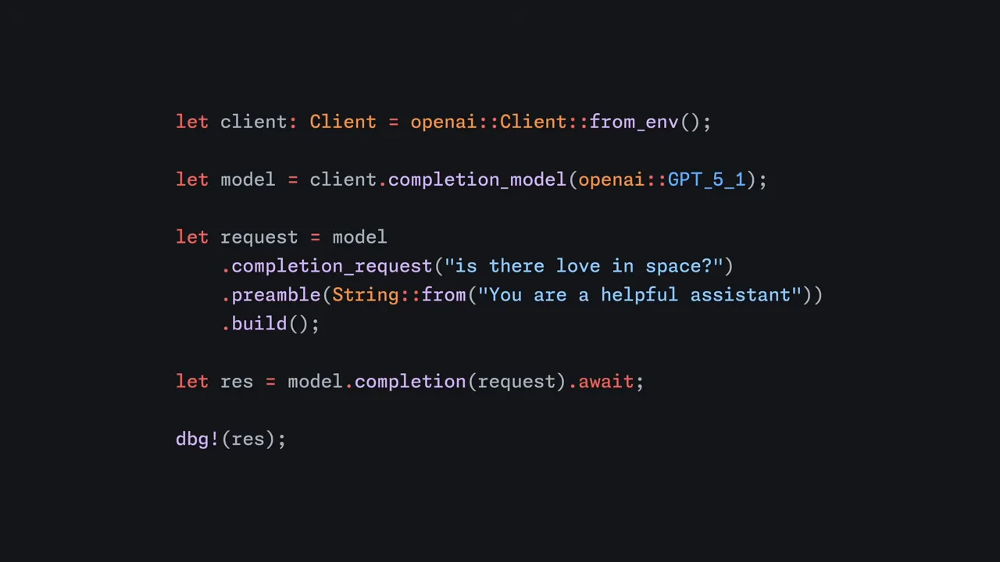
에이전트로 바꾸기
같은 클라이언트에서 agent를 만들면 에이전트가 돼요. 아래 코드는 앞 예제와 똑같은 일을 해요. 다른 점은 모델 위에 preamble을 바로 붙이고, agent.prompt(...) 한 줄로 묻는다는 거예요. 겉보기엔 비슷하지만 에이전트에는 뒤에서 볼 도구와 문맥을 붙일 수 있어요.
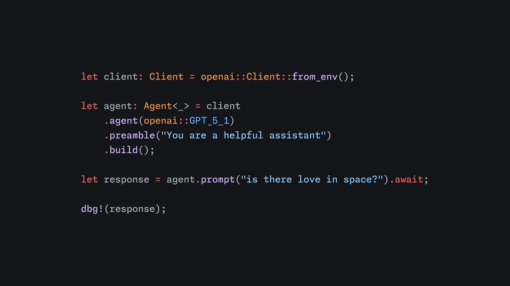
agent 빌더에 한 줄씩 더하는 방식이에요.
영상 00:40에서 보기
| 꺼내는 것 | 묻는 방법 | 더 붙일 수 있는 것 |
|---|---|---|
completion_model | completion_request로 요청을 만들어 보내기 | 프롬프트와 역할 정도 |
agent | prompt 한 줄 | 도구, MCP 도구, 동적 문맥(RAG) |
도구: 모델이 모르는 걸 가져오기
"내일 로스앤젤레스 날씨에 맞는 활동 세 가지는?" 같은 질문을 생각해 봐요. 모델은 학습 데이터로 인기 있는 활동은 알지만 내일 날씨는 몰라요. 그래서 날씨를 가져올 방법이 필요하고, 그게 도구예요. 도구로 웹 검색, 계산, 일기 예보 조회를 시킬 수 있고 실제 행동까지 맡길 수도 있어요.
발표자는 '행동을 맡기는 게 좋은 생각 같죠?'라고 비꼬면서, AI(Artificial Intelligence) 에이전트가 회사 데이터베이스를 통째로 지웠다는 기사를 잠깐 띄워요. 도구는 강력한 만큼 무엇을 맡길지 조심해야 한다는 뜻이에요.
에이전트에 도구 붙이기
코드는 앞의 에이전트에 .tool(WeatherForecastTool) 한 줄만 더했어요. 프롬프트도 날씨 질문으로 바뀌었고요.
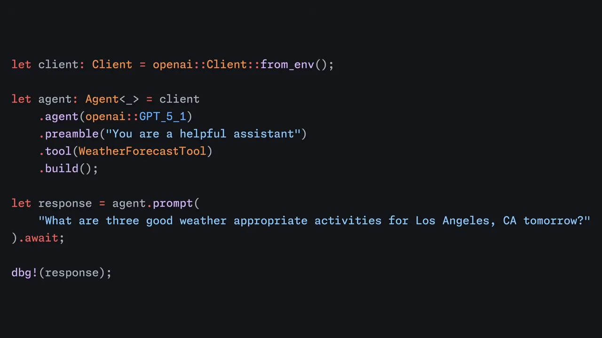
도구 호출이 오가는 순서
발표자는 Host(내 앱)와 Provider(모델 제공자) 사이를 오가는 메시지를 순서대로 그려요. 위에서부터 읽으면 돼요. 시스템 메시지와 함께 사용자 질문과 쓸 수 있는 도구 목록 weather-forecast가 가요. 모델은 답 대신 weather-forecast(zipcode: "90001") 호출을 돌려줘요. 앱이 도구를 실행해 ToolResult로 "Sunny, 80°F"를 보내면, 모델이 마지막 줄에서 그 결과로 답을 써요.
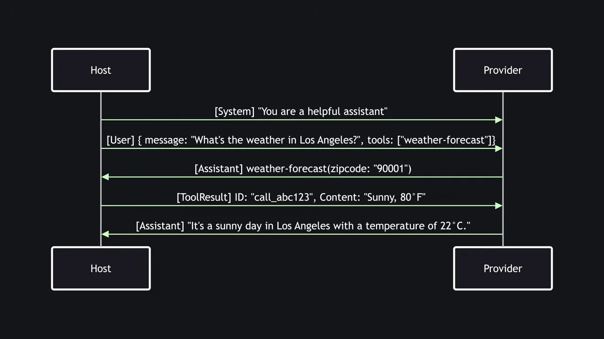
Rig가 여기서 해 주는 일이 핵심이에요. 모델이 도구를 부르면 Rig가 도구 로직을 실행하고, 결과를 담아 다시 모델에게 물어요. 그래서 중간 왕복은 코드에 드러나지 않고 개발자는 최종 답만 받아요.
도구를 직접 만들기
도구는 Tool 트레이트를 구현한 타입이에요. 아래 뼈대처럼 메서드가 두 개 있어요. definition은 모델에게 이 도구를 어떻게 쓰는지 알려 주고, call은 모델이 도구를 부를 때 실제로 도는 로직이에요.
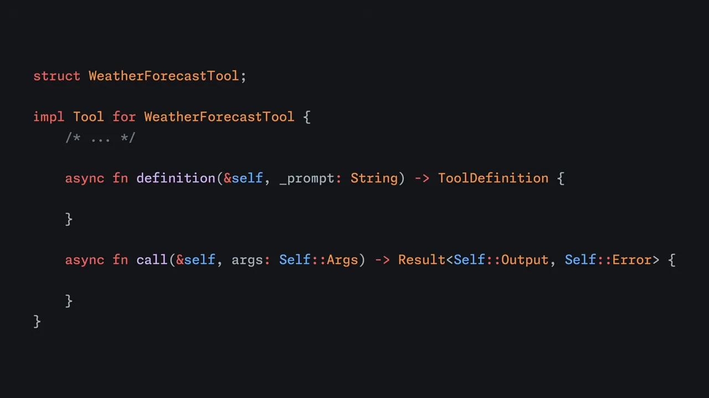
definition이 설명서, call이 실제 일이에요.
영상 02:06에서 보기
예제의 call은 진짜 예보를 가져오지 않아요. 우편번호가 실제로 있는지만 확인하고, "Sunny", "Rainy", "Cloudy", "Meatballs"처럼 7일치 날씨를 코드에 박아 돌려줘요. 두 번째 칸이 "Rainy"라서 내일은 항상 비예요.
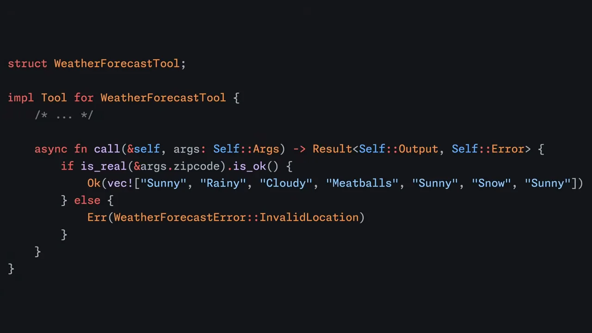
실행 결과 첫 줄에 "Tomorrow's forecast: Rainy"가 나와요. 모델이 스스로 날씨 도구를 불렀다는 증거예요. 그래서 박물관(The Broad, LACMA(Los Angeles County Museum of Art)), 역사 있는 극장, 지붕이 덮인 Grand Central Market처럼 실내 활동만 추천했어요. 발표자는 웅덩이에서 첨벙거리는 걸 얼마나 좋아하는지 알려 주지 않은 게 아쉽다고 농담해요.
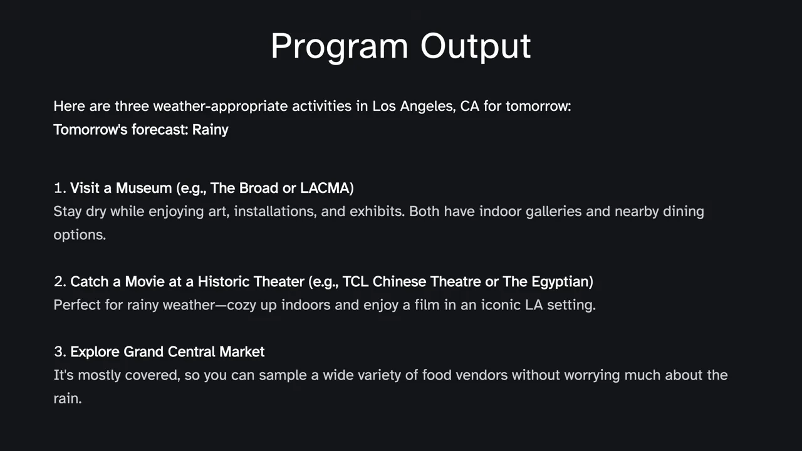
MCP: 남이 만든 도구 빌려 쓰기
MCP는 외부 제공자가 내놓은 도구를 찾아서 쓰게 해 줘요. 앞에서처럼 도구를 내 앱에서 정의하고 실행하는 대신, 그 일을 다른 제공자에게 맡기는 거예요.
발표자가 띄운 MCP 공식 사이트 그림은 MCP를 AI 앱의 USB-C 포트에 비유해요. 왼쪽에 채팅 앱(Claude Desktop, LibreChat), 코드 편집기(Claude Code, Goose) 같은 AI 앱이 있고, 오른쪽에 데이터베이스와 파일(PostgreSQL, SQLite, GDrive), 개발 도구(Git, Sentry), 생산성 도구(Slack, Google Maps)가 있어요. 가운데 MCP 칸 하나가 양쪽을 이어요.
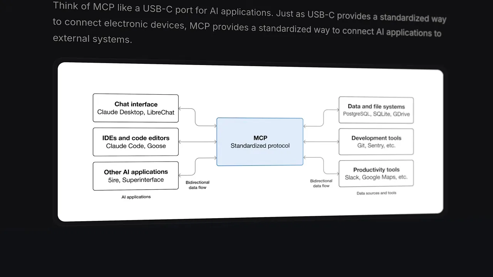
영상은 실제 제공자로 두 곳을 들어요. Twelve Data는 주식 시세를 가져오는 MCP 연동을, Hugging Face는 모델 저장소 검색 같은 MCP 연동을 제공해요. 아래 Hugging Face 설정 화면에는 HuggingChat, VSCode, Cursor, Claude Code처럼 이 MCP 서버를 붙일 수 있는 도구 목록이 보여요. 발표자는 이 분야가 아직 초기 단계라고 봐요.
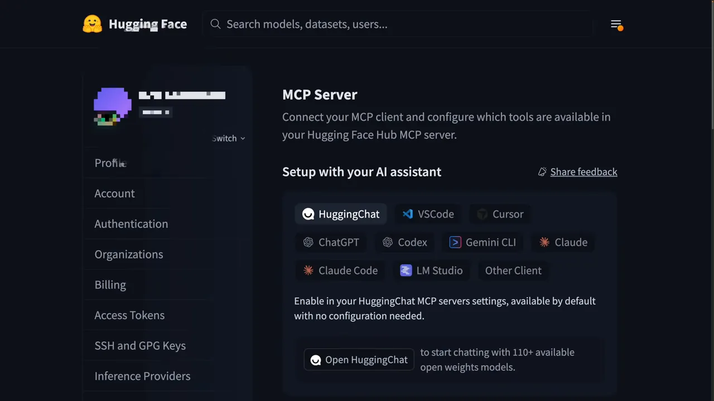
Rig에서 MCP 도구 쓰기
러스트에서 MCP 제공자와 연결하는 건 rmcp 크레이트예요. README 첫 줄이 'tokio 비동기 런타임 위에 만든 공식 러스트 MCP SDK'라고 소개해요. 배지를 보면 crates.io 버전이 v1.0.0-alpha예요.
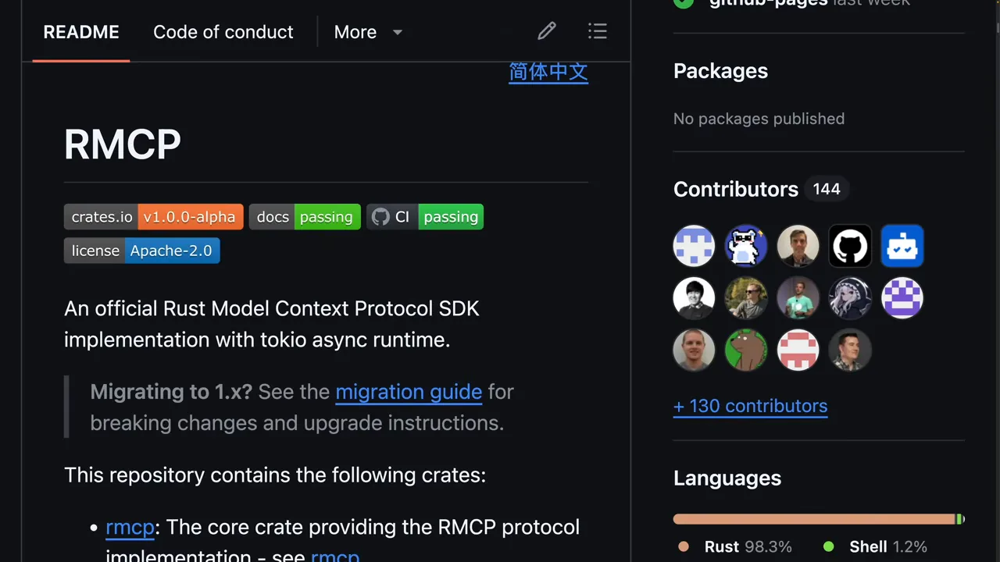
Rig는 rmcp와 연동돼서, 에이전트를 만들 때 .rmcp_tools(tools, peer)만 부르면 MCP 도구가 붙어요.
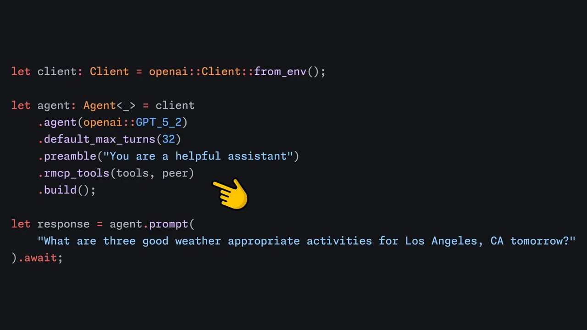
.tool(...) 자리에 .rmcp_tools(...)가 들어간 모양이에요.
영상 03:21에서 보기
| 직접 만든 도구 | MCP 도구 | |
|---|---|---|
| 정의하는 곳 | 내 코드의 Tool 구현 | 외부 제공자 |
| 실행하는 곳 | 내 앱 | 외부 제공자 |
| Rig에 붙이는 법 | .tool(WeatherForecastTool) | .rmcp_tools(tools, peer) |
임베딩과 RAG
임베딩: 문장의 뜻을 숫자로
임베딩은 글의 의미를 숫자로 나타낸 거예요. 슬라이드에는 "The Moon is a cube", "Dark matter is spacetime", "The sky is green" 세 문장마다 아래에 [-0.03, 0.01, …] 같은 숫자 배열이 붙어 있어요. 이 숫자끼리 비교하면 문장의 뜻이 얼마나 가까운지 잴 수 있어요.
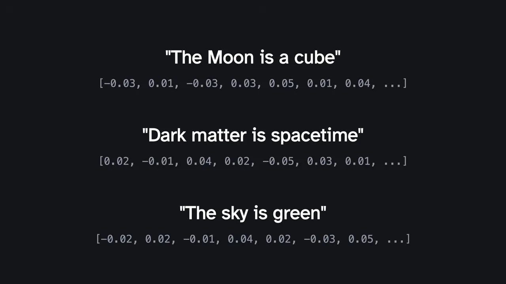
지식 베이스를 통째로 넣으면 안 되는 이유
회사에 모델 답변에 도움이 될 사내 지식 베이스가 있다고 해 봐요. 가장 무식한 방법은 질문마다 지식 베이스 전체를 붙이는 거예요. 슬라이드는 지식 베이스 세 줄 아래에 "What shape are celestial bodies?"라는 프롬프트를 붙이고, 그 위에 금지 표시를 그렸어요.
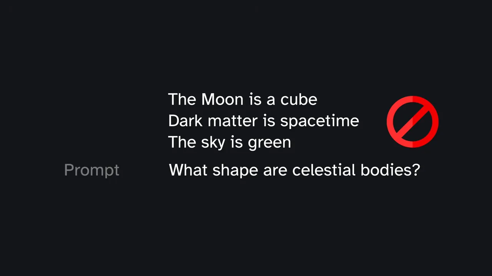
이유는 두 가지예요. 하나는 컨텍스트 윈도우가 유한하다는 거예요. 발표자는 '적어도 지금은'이라고 덧붙여요. 다른 하나는 입력이 길어질수록 모델의 정확도가 떨어지는 경향이 있다는 거예요.
RAG: 관련된 것만 골라 넣기
그래서 흔히 쓰는 해법이 RAG예요. 모델이 학습하지 못한 정보 중에서 질문과 관련된 부분만 찾아 프롬프트에 넣어요. 발표자가 띄운 Qdrant 문서 그림이 흐름을 보여 줘요. 위의 질문("지난달 예산을 지켰나?")으로 지식 베이스에서 관련 지식을 찾고, 둘을 함께 LLM에 넣어 아래의 답을 만들어요.
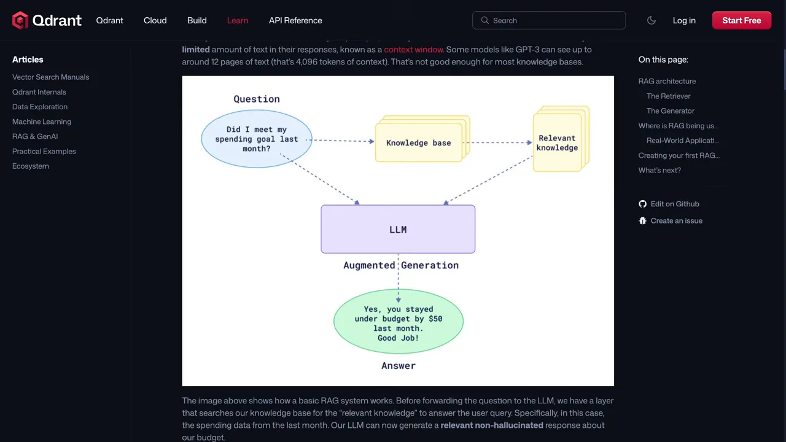
Rig로 시맨틱 검색하기
Rig는 시맨틱 검색과 RAG 둘 다 짧은 API로 지원해요. 첫 화면 코드를 위에서부터 읽으면 이래요. 클라이언트에서 embedding_model로 임베딩 모델(TEXT_EMBEDDING_3_SMALL)을 꺼내요. 다음으로 EmbeddingsBuilder에 문서 세 개를 넣어 임베딩을 만들어요. 마지막 줄에서 그 결과를 InMemoryVectorStore에 넘겨요.
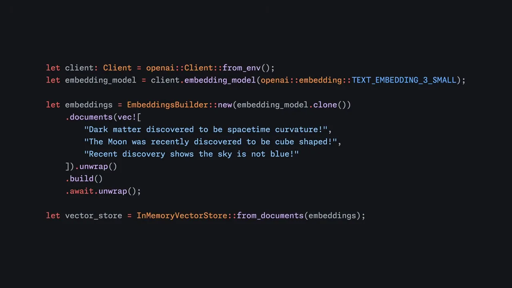
Embed 트레이트만 구현하면 뭐든 돼요. 예제에서는 그냥 문자열이에요.
영상 05:37에서 보기
예제의 벡터 스토어는 메모리 안에 있지만 외부 벡터 데이터베이스로 바꿀 수도 있어요. 발표자는 Qdrant를 예로 들어요. 다음 코드는 스토어에서 인덱스를 꺼내 바로 질의해요. query에 "What shape are celestial bodies more than 2000 miles wide?"를 넣고, top_n으로 결과를 받아요. 이게 시맨틱 검색이에요.
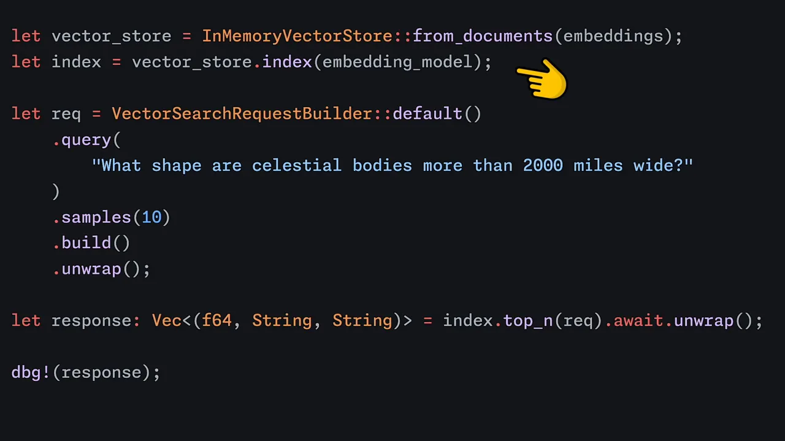
Vec<(f64, String, String)>가 점수, 문서 이름, 내용이에요.
영상 05:46에서 보기
질의하면 질문 문장의 임베딩을 새로 계산하고, 스토어에 있는 문서마다 유사도를 매겨요. 결과마다 score, 자동으로 붙은 doc_name, content가 나와요. 점수가 높을수록 질문과 뜻이 가까워요. 맨 아래 달 문서가 0.3605로 가장 높아요.
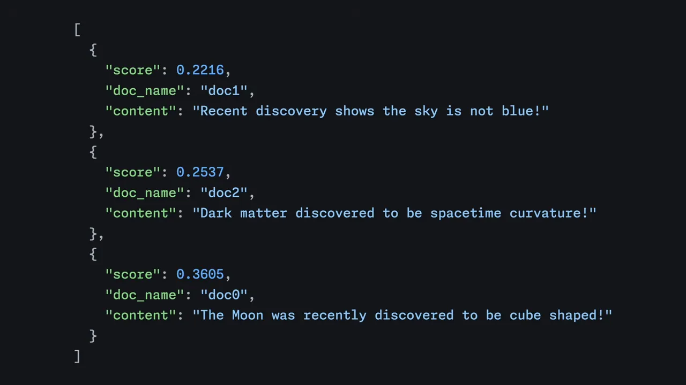
세 점수를 같은 눈금에 놓으면 차이가 더 잘 보여요.
에이전트에 붙이면 RAG
이제 처음 예로 든 '기가바이트짜리 사내 문서'에 적용해요. 화면에 나온 그 문서는 사실 문장 세 개라고 발표자가 농담해요. 에이전트를 만들 때 .dynamic_context(1, index)를 더하면, 질문과 가장 가까운 문서를 프롬프트에 끼워 줘요. 첫 인자가 1이라 문서 한 개만 들어가요. preamble에는 '문서 내용을 항상 사실로 여겨라'라는 지시도 넣었어요.
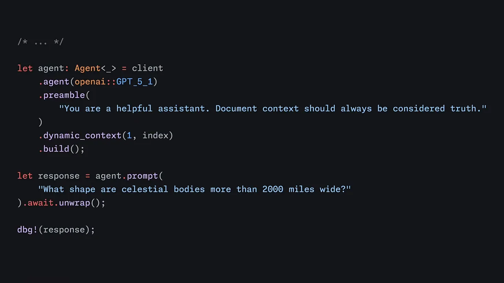
dynamic_context 한 줄로 줄어들었어요.
영상 06:31에서 보기
결과를 보면 모델은 먼저 실제로는 그런 천체가 대체로 둥글다고 말해요. 그다음 '주어진 문서에는'이라며 "The Moon was recently discovered to be cube shaped!"를 인용하고, 그 문서 안에서는 달이 정육면체라고 답해요. 달 문서가 프롬프트에 들어갔다는 뜻이에요.
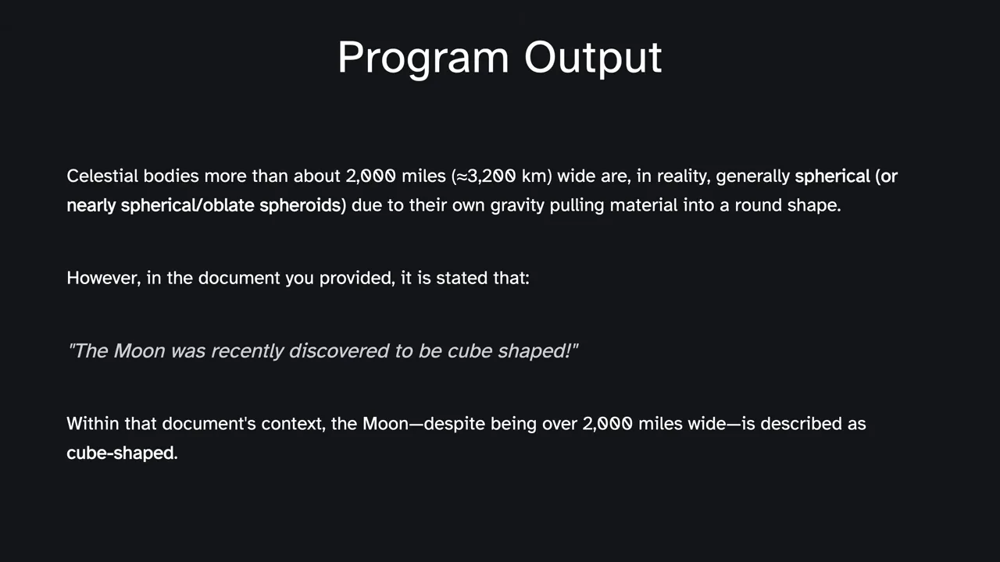
파이프라인, 그리고 Rig를 고를 이유
정해진 순서대로 돌리는 파이프라인
파이썬의 LangChain은 파이프라인을 처음 널리 알린 프레임워크로 유명해요. 순차 작업과 병렬 작업을 엮어서 앞 작업의 출력이 뒤 작업의 입력이 되게 해요. Rig에도 비슷한 개념이 있어요. 단계마다 앞 단계에서 입력을 받고 다음 단계로 출력을 넘겨요.
영상의 예제는 앞의 RAG와 거의 같은 일을 파이프라인으로 해요. 코드 맨 위 parallel! 안에 두 갈래가 있어요. passthrough는 질문을 그대로 넘기고, lookup(index, 1)은 시맨틱 검색으로 문서 한 개를 찾아요. 가운데 map이 둘을 받아 "Docs: … Prompt: …" 모양으로 합쳐요. 검색이 실패하면 오류를 찍고 질문만 넘겨요. 맨 아래 prompt(agent)가 그걸 에이전트에 물어요.
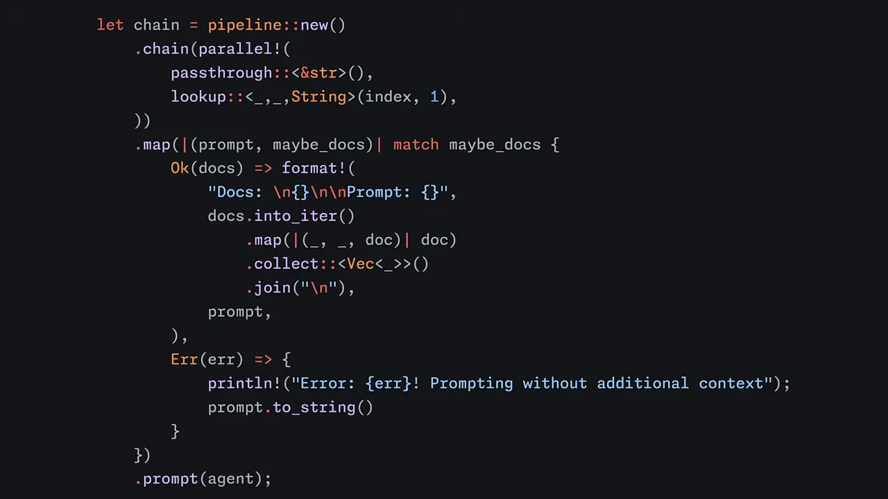
코드의 흐름을 단계로 옮기면 이래요. 파이프라인은 chain.call("What shape are celestial bodies…")처럼 문자열 하나로 시작해요.
flowchart LR Q["질문 문자열"] --> P1["passthrough
질문 그대로"] Q --> P2["lookup(index, 1)
문서 1개 검색"] P1 --> M["map
Docs + Prompt로 합치기"] P2 --> M M --> A["prompt(agent)
에이전트에 묻기"] A --> R["답"]
발표자는 언제 파이프라인을 쓰는지도 짚어요. 정해진 단계를 그대로 돌리고, 무엇을 할지 모델이 결정하지 않게 하고 싶을 때예요. 더 깊이 가면 여러 프롬프트를 엮고 단계마다 다른 언어 모델을 쓸 수도 있어요. 다만 대부분의 Rig 사용자는 여기까지 쓰지 않을 것 같다고 말해요.
에이전트 + dynamic_context | 파이프라인 | |
|---|---|---|
| 코드 길이 | 빌더에 한 줄 | 단계를 하나씩 써서 더 길어요 |
| 누가 흐름을 정하나요 | 에이전트(도구를 부를지는 모델이 판단) | 코드에 적은 순서 |
| 어울리는 경우 | 대부분의 RAG | 단계를 고정하고 싶을 때, 여러 모델을 엮을 때 |
왜 Rig에서 시작하나요
러스트로 언어 모델을 다루는 크레이트는 많아요. 그래도 발표자는 Rig를 좋은 출발점으로 꼽고 이유를 넷 들어요. API가 간결하고, 기능이 고루 있고, 개발이 꾸준하고, Discord 커뮤니티가 잘 답해 준다는 거예요. 꾸준한 개발의 근거로 GitHub 저장소를 띄우는데, 동그라미 친 마지막 커밋이 '7 hours ago'예요. 오른쪽에는 별 6.2k, 포크 676이 보여요.
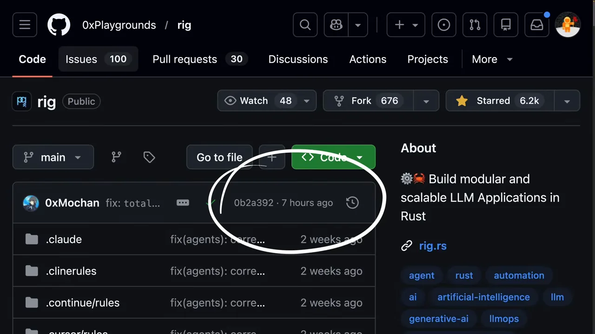